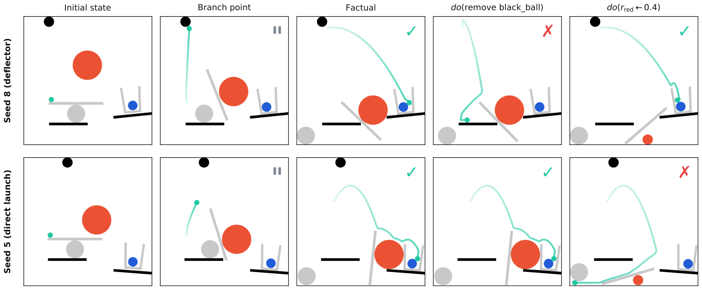
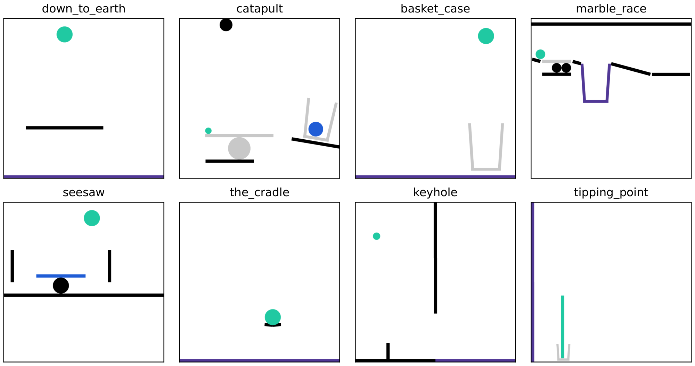
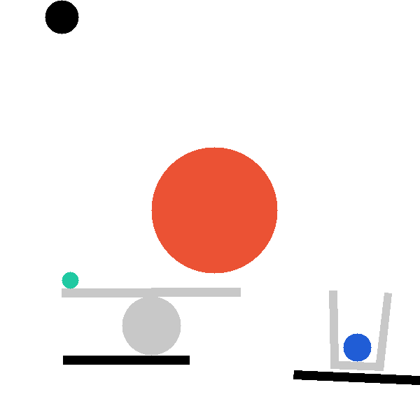
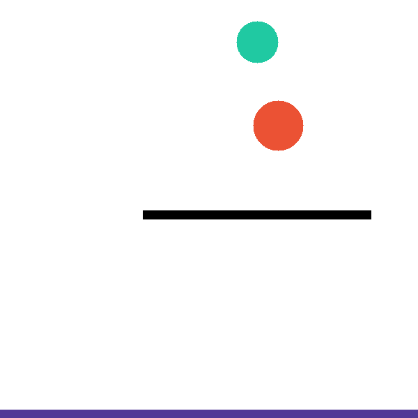
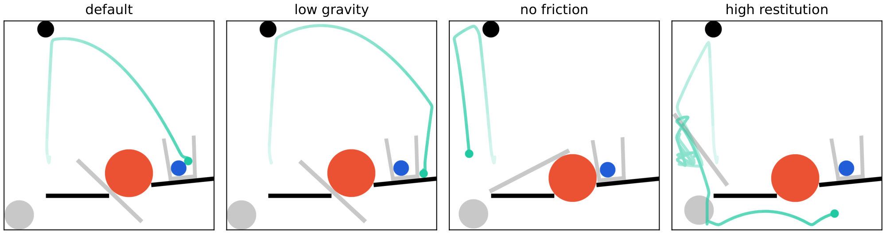

InterPhyre: A Testbed for Learning through Experimentation
Most benchmarks only ask whether an agent can solve a task. Learning by experimentation needs an environment
the agent can interact with to gather evidence: inspect the current instance, test interventions,
observe intermediate dynamics, diagnose failures, and reuse what it learned on future seeds and levels.
InterPhyre provides this in a controlled 2D physics domain with continuous actions and
long-horizon causal structure. Each task asks the agent to place a red ball at (x, y, r), after
which the simulator checks a level-specific success predicate. Successful placements hinge on contact chains,
lever mechanics, collision timing and strategy-dependent dynamics that even strong LLMs cannot reliably
anticipate from a scene description alone. InterPhyre is therefore both a benchmark and a diagnostic
environment for experimentation-based methods such as HExA.
Snapshot any running simulation at a physical event and branch it into paired factual and counterfactual rollouts that share a bit-identical prefix and differ only in one controlled perturbation.
Levels are Python classes. Gravity, friction, restitution and density are configuration fields, so physics can be varied while the scene and seed stay fixed. 25 levels × 10,000 oracle-verified seeds = 250,000 certified task instances.
The simulator and intervention API are exposed as tool calls an LLM agent invokes directly, next to a gymnasium interface and symbolic, image, or combined observation modes.
Paired counterfactuals from a shared physical state

catapult with a different oracle strategy;
the teal curve is the green ball's trajectory. Top (seed 8, deflector strategy): removing the deflector
causes failure; shrinking the red ball does not. Bottom (seed 5, direct launch): shrinking the red ball
causes failure; removing the deflector does not. Causal relevance is a property of an object relative to the
active strategy, not of the object in isolation.A curriculum of 25 levels
The curriculum spans gravity-driven drops, collision chains, balancing, pendulums and aperture navigation. Every level ships with 10,000 seeds, each certified solvable by an exhaustive oracle search over a discretized action grid, so up to the grid resolution every evaluation failure is attributable to the agent. New levels or seed ranges can be certified offline in the same way.

down_to_earth (gravity-driven drop
past an obstruction), catapult (impulse transfer), basket_case (container avoidance),
marble_race (rolling dynamics), seesaw (lever balance), the_cradle (pendulum),
keyhole (aperture navigation) and tipping_point (unstable equilibrium).Levels used in our experiments





Physics parameters are first-class inputs
Gravity, friction, restitution, density and solver step size are fields on a SimulationConfig passed
to the environment, not constants compiled into the engine. Unlike benchmarks that vary physics jointly with
level layout, InterPhyre keeps the two independent: a generalization study can hold the level and seed fixed
and sweep a single physical parameter.

catapult (seed 8) under four physics configurations with the same oracle action.
Default physics succeeds; reduced gravity overshoots the basket opening; without friction the ball falls short;
with high restitution the arm is over-driven and the ball overshoots. Each change of one parameter shifts the
action required to solve the level.Levels are Python code
Geometry, the action slot and the success condition are ordinary Python; registering the builder makes a new level usable by the same evaluation pipeline, with no package rebuild.
@register_level
def build_level(seed=None, variant=0, scene=None) -> Level:
ground = Bar(left=-5, right=5, y=-4.9, thickness=0.2,
color="purple", dynamic=False)
green = Ball(x=0, y=4.0, radius=0.5, color="green", dynamic=True)
red = Ball(x=0, y=0.0, radius=0.4, color="red", dynamic=True)
return Level(
name="falling",
objects={"green_ball": green, "red_ball": red,
"purple_ground": ground},
action_objects=["red_ball"],
success_condition=lambda engine: engine.is_in_contact_for_duration(
"green_ball", "purple_ground", 3.0),
)Event-driven branch points
Researchers name a physical event rather than a step index; the engine fires when it happens.
Triggers compose (on_sequence, on_any).
| Trigger | Fires when |
|---|---|
on_contact(a, b) | Objects a and b touch |
on_contact_duration(a, b, t) | Sustained contact ≥ t s |
on_position_threshold | Object crosses a position |
on_velocity_threshold | Speed crosses a threshold |
at_step(n) | Fixed timestep |
when(predicate) | Custom predicate on the engine |
Perturbations are either kinematic (impulse, force, velocity or position override, freeze) or structural (add or remove an object).
The tool-call interface
Agents interact with InterPhyre only through tools. State information tools query the scene
without advancing time; simulation tools place the red ball at (x, y, r) and run the
physics. Five shared tools are available on every level (get_level_state, simulate_action,
simulate_partial, get_contact_log, finish), and each level adds its own analysis
tools, such as compute_gap_analysis on down_to_earth or four lever-mechanics probes on catapult. ReAct,
HExA and all memory baselines use exactly the same interface.